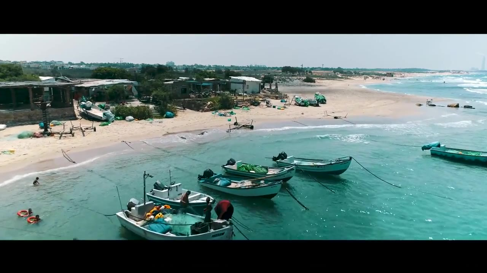
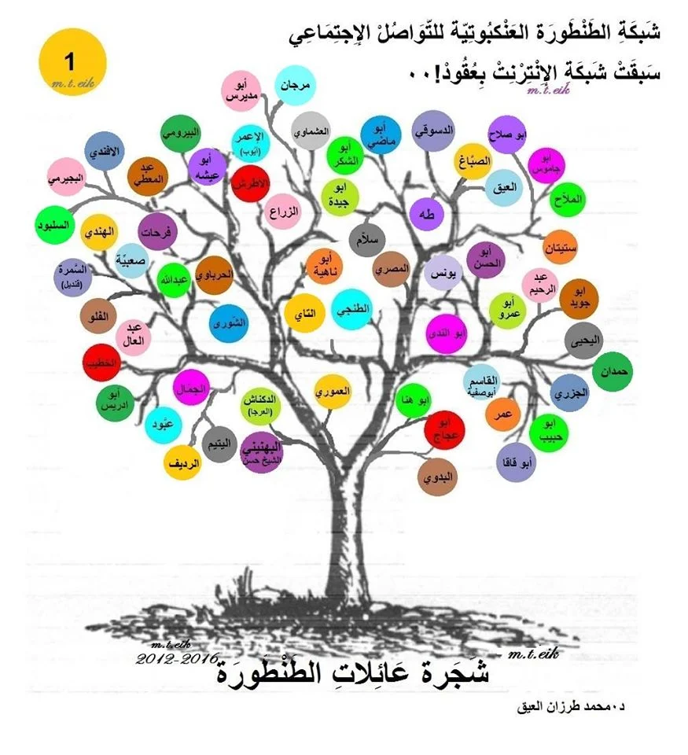

أصل العائلة
تعريف موجز بتاريخ العائلة بين الطنطورة وإجزم وبني هرماس.

من الطنطورة إلى إجزم
موقع عائلي يوثق أصل عائلة أبو ماضي / الماضي من الطنطورة وإجزم، ويحفظ ذاكرة الأجداد والشهداء واللاجئين، اعتمادًا على الثوابت العائلية والمصادر الفلسطينية المنشورة.
جاء هذا الموقع لحفظ ذاكرة عائلة أبو ماضي / الماضي وتقديمها بصورة واضحة للأبناء والأقارب والباحثين. يجمع الموقع الوثائق العائلية، السرد التاريخي، أسماء الفروع، والمصادر المتاحة، ليبقى تاريخ العائلة محفوظًا ومنظمًا وقابلًا للتحديث عند توفر وثائق أو شهادات إضافية.
تعريف موجز بتاريخ العائلة بين الطنطورة وإجزم وبني هرماس.
أسماء محفوظة من جيل النكبة وذاكرة الطنطورة واللجوء.
عرض مبسط للفروع العائلية المعروفة والثوابت المتوارثة.
قائمة بالمراجع والوثائق التي استند إليها محتوى الموقع.
فيما يلي النسخة التعريفية المختصرة عن فرع آل أبو ماضي / الماضي من الطنطورة، مع عرض مركز لأصل العائلة، علاقتها بإجزم، وفرع الشهيد رشيد عمر أبو ماضي.
من إجزم إلى الطنطورة، قضاء حيفا
تنتمي عائلة آل أبو ماضي / الماضي إلى قرية الطنطورة في قضاء حيفا، وتعود في أصلها القروي والتاريخي إلى إجزم من بني هرماس، حيث كان مركز آل ماضي التاريخي.
ويظهر اسم “آل ماضي” في إجزم بوصفه الاسم التاريخي الأوسع للعائلة، بينما استقر اسم “آل أبو ماضي” في الطنطورة بوصفه اسم الفرع المحلي المعروف. وهذا النمط في أسماء العائلات الفلسطينية مألوف؛ إذ تحتفظ العائلة باسمها الأصلي في مركزها التاريخي، بينما يُعرف فرع منها في قرية أخرى باسم محلي أو كنية عائلية تصبح مع الوقت اسمًا ثابتًا للفرع.
يجمع سجل عائلات الطنطورة بين الاسمين في نص واحد، حيث جاء:
“آل أبو ماضي: أصلهم من أجزم من بني هرماس وهناك مركزهم، ومن زعامة آل ماضي في الطنطورة محمد الماضي (أبو يحيى).”
هذا النص يوضح العلاقة الطبيعية بين الاسمَين؛ فهو يذكر الفرع في الطنطورة باسم آل أبو ماضي، ويردّه إلى إجزم من بني هرماس، ثم يذكر زعامة الفرع باسم آل ماضي، ويورد اسم محمد الماضي، أبو يحيى.
وبذلك يظهر آل ماضي كاسم العائلة التاريخي في إجزم، وآل أبو ماضي كاسم الفرع الطنطوري المستقر.
تُعد إجزم المركز التاريخي الأبرز لآل ماضي. وتشير قراءة د. محمد عقل لسجل نفوس عثماني لقرية إجزم سنة 1913 إلى أن الماضي كانت أكبر حمائل القرية وأغناها، كما يرد اسم عائلة خديش ضمن عائلات إجزم، وهي العائلة التي ترد في مصادر الطنطورة بوصفها من أقارب آل ماضي.
وتذكر PalQuest أن إجزم كانت موطن الشيخ مسعود الماضي، وأن عائلة الماضي بسطت نفوذها على الساحل جنوب الكرمل والمنحدرات الغربية لجبل نابلس في النصف الأول من القرن التاسع عشر، وأن مقرها الأساسي كان في إجزم حيث بنت قلعة كبيرة.
ومن الشواهد المكانية المهمة وجود وادي أبو ماضي جنوب إجزم، وهو ما يعزز حضور صيغة “أبو ماضي” في الجغرافيا المرتبطة بإجزم نفسها، إلى جانب حضورها المعروف في الطنطورة.

في الطنطورة، استقر اسم أبو ماضي كاسم الفرع المحلي المعروف من العائلة. وتذكر قوائم شهداء الطنطورة اسم الشهيد رشيد ابن عمر أبو ماضي واسم الشهيد حسن أنيس أبو ماضي ضمن شهداء القرية سنة 1948.
كما يرد اسم فواز أنيس أبو ماضي، المولود سنة 1929، في تقرير Forensic Architecture عن الإعدامات والمقابر الجماعية في الطنطورة، بوصفه أحد ناجي القرية. وهذا يؤكد حضور اسم أبو ماضي في الطنطورة في جيل النكبة، وظهوره في قوائم الشهداء وشهادات الناجين بوصفه اسم الفرع الطنطوري المعروف من العائلة.
من فرع الطنطورة يأتي وصفي رشيد عمر أبو ماضي، ابن الشهيد رشيد ابن عمر أبو ماضي.
ومن أبناء وبنات وصفي رشيد عمر أبو ماضي:
باسل، محمد، علاء، وسيم، لؤي، ميسون، وسهير.
وتعرض شجرة “هوية” لعائلة أبو ماضي – الطنطورة، حيفا تسلسلًا يبدأ بـ قاسم ثم عمر ثم رشيد ثم وصفي، ويظهر تحت وصفي عدد من أبنائه. وبذلك يلتقي الثابت العائلي مع السجل العائلي المنشور في تأكيد فرع وصفي من عائلة أبو ماضي الطنطورية.

لم تكن الصلة بين الطنطورة وإجزم مجرد صلة نسبية أو قروية، بل ظهرت أيضًا في السياق الوطني. فقد برز من آل ماضي في القرن العشرين القيادي الفلسطيني معين الماضي، ابن إجزم، وأحد الشخصيات الوطنية الفلسطينية المعروفة في مرحلة الانتداب.
وتذكر شهادات عن أحداث سنة 1948 أن بعض أعيان الطنطورة تواصلوا مع معين الماضي في لبنان ضمن محاولات تأمين السلاح للقرية قبل سقوطها. وتعكس هذه الإشارة استمرار العلاقة بين الطنطورة ورموز آل ماضي حتى سنة النكبة.
كما برز دور آل ماضي في الحياة القروية والوطنية في قضاء حيفا من خلال جمعية تعاون القرى التي انطلقت من إجزم سنة 1924، وشارك فيها ممثلون عن قرى حيفا، ومن بينها الطنطورة، إلى جانب شخصيات من آل ماضي مثل معين الماضي ونايف الماضي.
بعد النكبة وتهجير أهالي الطنطورة، انتقل فرع من العائلة إلى مخيمات اللاجئين في سورية، ضمن مسار اللجوء المعروف لأهالي الطنطورة وقضاء حيفا.
وتوجد إشارات إلى حضور عائلة أبو ماضي الطنطورية في دمشق ومخيم اليرموك، ومنها ذكر ماجد أبو ماضي، المولود في دمشق سنة 1956، وأن أصوله تعود إلى الطنطورة، وأن والده يحيى أبو ماضي كان يدرّس في مدرسة الكرمل في مخيم اليرموك ويذكّر طلابه بمجزرة الطنطورة.
تعود عائلة آل أبو ماضي / الماضي في أصلها القروي إلى إجزم من بني هرماس.
ويعرض كتاب “نظرات في تاريخ عشيرة الوحيدات” لجميل عياد الوحيدي مادة عن بني هرماس والوحيدات وبني عطية، وينقل عن مصطفى الدباغ في “بلادنا فلسطين” ذكر آل الماضي، زعماء إجزم من أعمال حيفا، ضمن هذا السياق العشائري الأوسع.
وتعتمد هذه الصفحة التعريف الأقرب والأوضح للعائلة:
آل أبو ماضي / الماضي من الطنطورة، وأصلهم القروي والتاريخي من إجزم من بني هرماس، حيث كان لآل ماضي حضور تاريخي بارز في قضاء حيفا.
آل أبو ماضي / الماضي عائلة فلسطينية من قرية الطنطورة في قضاء حيفا، تعود في أصلها القروي والتاريخي إلى إجزم من بني هرماس.
ويظهر من مجموع المصادر أن اسم آل ماضي هو الاسم التاريخي الأوسع المرتبط بإجزم، بينما استقر اسم آل أبو ماضي في الطنطورة كاسم الفرع المحلي من العائلة. وقد جمع سجل عائلات الطنطورة الاسمين في نص واحد، حين ذكر آل أبو ماضي، ثم نسب أصلهم إلى إجزم، وذكر من زعامة آل ماضي في الطنطورة محمد الماضي، أبو يحيى.
ومن هذا الفرع الطنطوري الشهيد رشيد ابن عمر أبو ماضي، ومن ذريته وصفي رشيد عمر أبو ماضي وأبناؤه:
باسل، محمد، علاء، وسيم، لؤي، ميسون، وسهير.

شجرة عائلات الطنطورة، صورة جامعة لكل عائلات القرية قبل النكبة. اضغط للتكبير.
تذكر آل أبو ماضي ضمن عائلات الطنطورة، وتورد أصلهم من إجزم من بني هرماس، وتذكر زعامة آل ماضي في الطنطورة.
تذكر الشهيد حسن أنيس أبو ماضي والشهيد رشيد ابن عمر أبو ماضي.
تذكر أن الماضي كانت أكبر حمائل إجزم وأغناها.
تذكر مسعود الماضي، ونفوذ آل ماضي في إجزم، وقلعة العائلة، ووادي أبو ماضي جنوب القرية.
يذكر شهادة فواز أنيس أبو ماضي، المولود سنة 1929، بوصفه أحد ناجي الطنطورة.
تعرض فرع العائلة وتسلسل قاسم، عمر، رشيد، وصفي، وأبناء وصفي.
يتناول بني هرماس والوحيدات وبني عطية، وينقل عن الدباغ ذكر آل الماضي زعماء إجزم.
هذه الصفحة مخصصة لأفراد العائلة، الأقارب، الباحثين، وكل من يملك تصحيحًا، وثيقة، صورة، شهادة، أو إضافة يمكن أن تساعد في توثيق تاريخ العائلة بدقة أكبر.